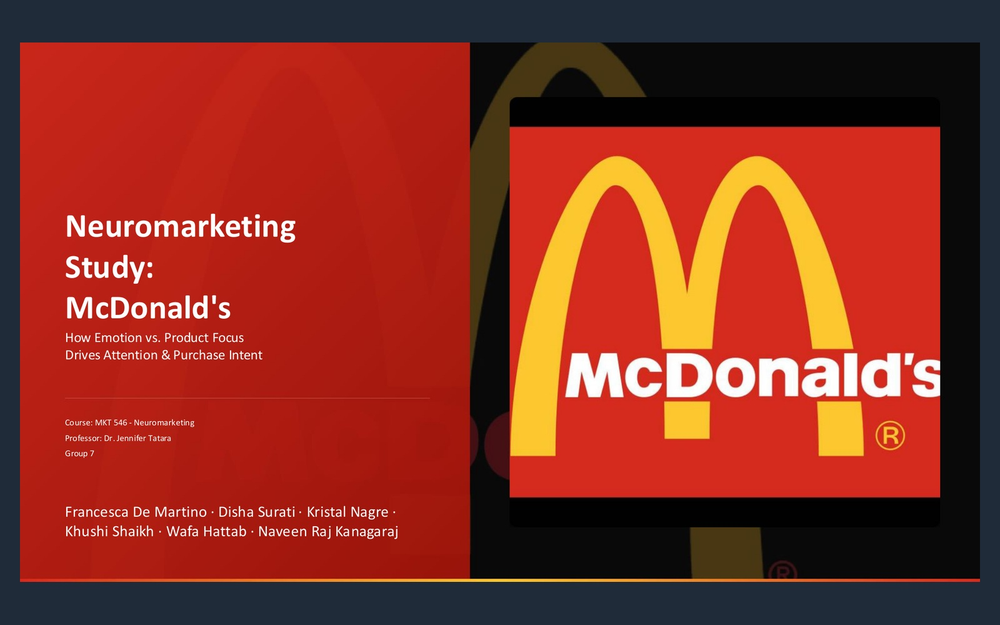
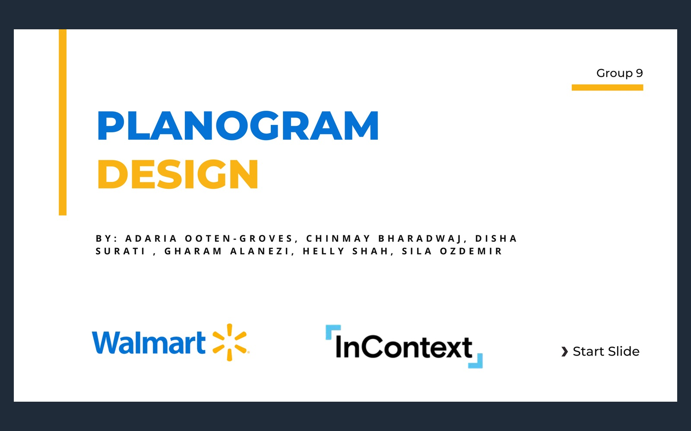
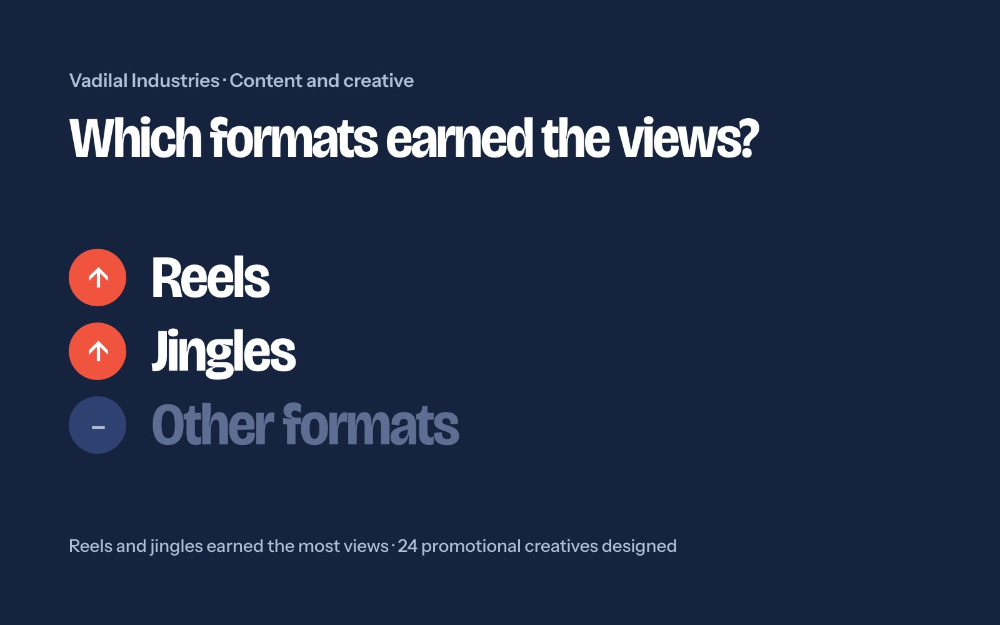
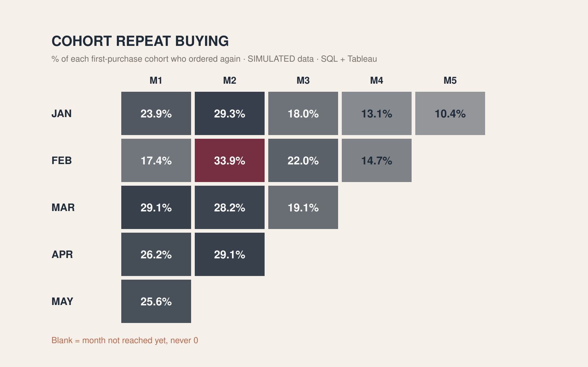
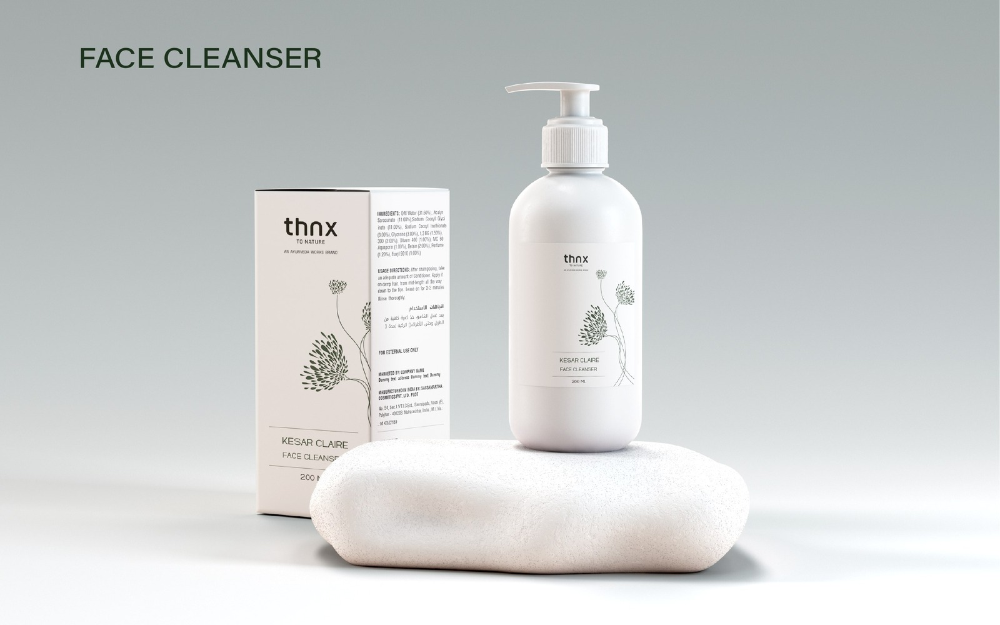

Marketing questions I've investigated.
Campaign performance, consumer behavior, positioning, and experimentation, explored through data, research, and real marketing work. Every case study distinguishes observed results from projected recommendations.

iStash: Segmentation, Email & Acquisition
Segmenting users in HubSpot and Mailchimp, testing creative and CTAs, and writing the onboarding emails behind 150+ sign-ups in 2 weeks.

What Makes a Brand Stick
Eye-tracking two creatives to test whether attention actually becomes memory.

Walmart × InContext
Testing whether a redesigned planogram changes what shoppers put in the basket.

The Marketer's Nexus
Growing KMG's Instagram 12% and filling 81% of seats for its flagship event, The Marketer's Nexus.

Vadilal Industries
Using content format performance to decide what to make next.

Sephora Lifecycle Capstone
Turning 9,999 skincare reviews into page, email and win-back decisions.

Funnel, Segmentation & Retention
Finding where three quarters of a million events leak between cart and purchase.

THNX
An Ayurveda-rooted skincare brand built from identity through to shelf.